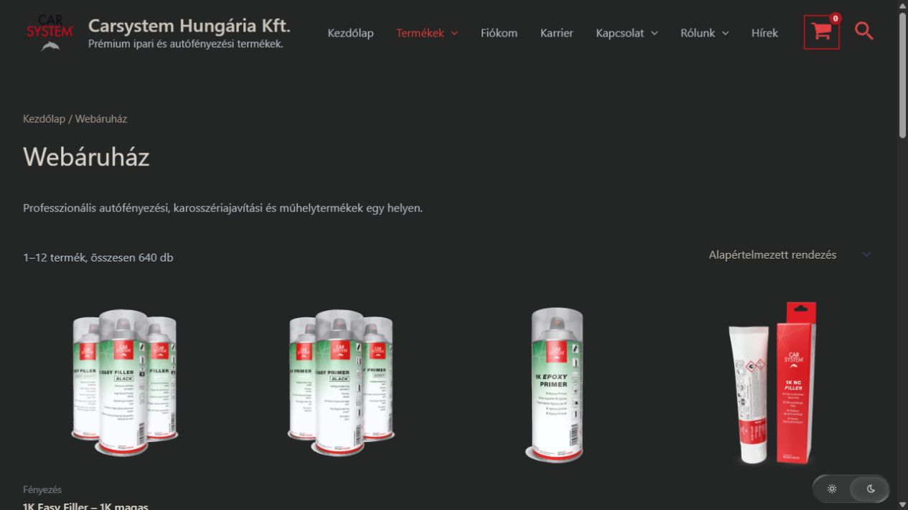
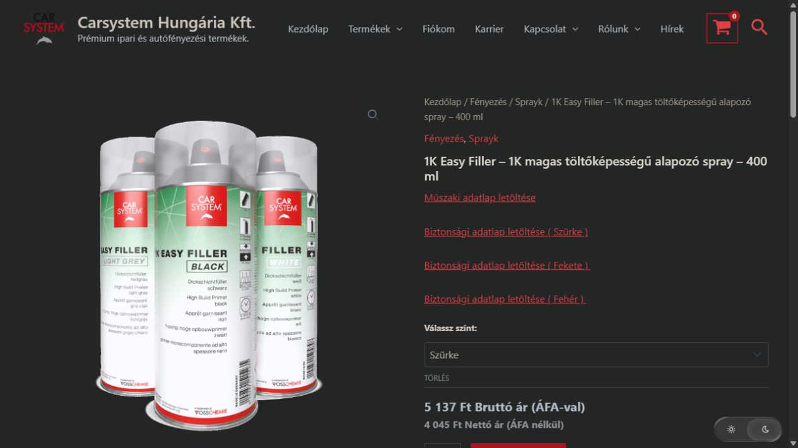
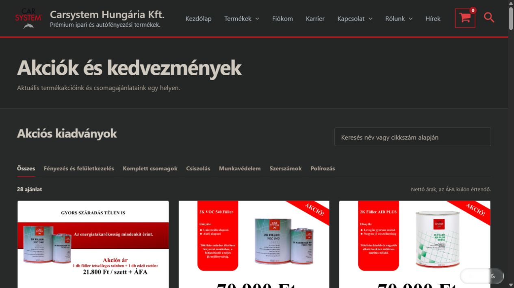
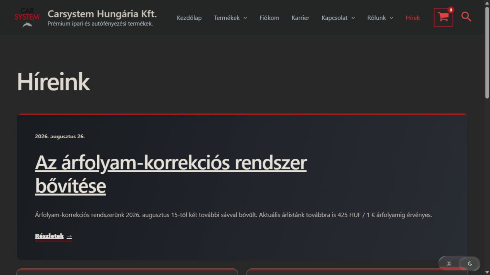

{kind=link}
{kind=link}
{kind=link}
{kind=link}
{kind=link}
{kind=link}
Lakossági és szakmai vásárlók
A nettó és bruttó árak párhuzamos megjelenítése mindkét vásárlói körnek segít. A szerződött ügyfelek számára partnerprogram és egyedi kedvezmények is elérhetők.
Webáruház az autófényezés
és a karosszériajavítás világából.
A Carsystem Hungária Kft. webshopja lakossági vásárlókat és szakmai partnereket is kiszolgál. A kínálat mellett a termékadatok, az akciók és a céges tájékoztatók is helyet kaptak.
Élő webshop megnyitása01 / A projekt
Egy autófényezési webshopban a termékfotó és az ár csak a kiindulópont. A megfelelő szín, kiszerelés és műszaki információ ugyanúgy része a választásnak.
A Carsystemshop több száz terméket fog össze: a csiszolóanyagoktól és kittektől a fényezési rendszereken át a munkavédelmi eszközökig. A felületnek azok számára is átláthatónak kell lennie, akik most keresnek egy terméket, és azoknak is, akik rendszeresen rendelnek a műhelyük számára.
Az oldal kialakításánál ezért a kínálat rendezése, a részletes termékoldalak és az aktuális ajánlatok könnyű elérése kapott hangsúlyt.
02 / Nézz körül
Öt részlet a működő oldalból.
A képek kattintásra nagyíthatók.
A nyitóoldalon a cég bemutatkozása mellett közvetlenül elérhetők a termékek, az akciók és a hírek. Lejjebb kiemelt termékek és kategóriák segítik a továbblépést.
Főoldal megnyitása ↗
Nagyítás ↗A termékek szakmai kategóriákba rendezve böngészhetők. A listában ár, népszerűség vagy újdonság szerint is lehet rendezni; a termékkártyák nettó és bruttó árat is mutatnak.
Kínálat megnyitása ↗
Nagyítás ↗A termékoldalon együtt szerepel a leírás, a választható változat, a cikkszám és a rendelési mennyiség. A műszaki és biztonsági adatlapok közvetlenül a termék mellől tölthetők le.
Termékoldal megnyitása ↗
Nagyítás ↗Az ajánlatok között név és cikkszám alapján lehet keresni, vagy termékkör szerint szűrni. A nagyítható kiadványok mellett láthatók a csomagok feltételei, és innen a kapcsolódó termékhez is tovább lehet lépni.
Akciók megnyitása ↗
Nagyítás ↗Az árváltozások, az új akciók és a szakmai tájékoztatók külön híroldalon jelennek meg. A vásárlók később is visszakereshetik az őket érintő közleményeket.
Hírek megnyitása ↗Képernyőképek az élő webshopról, 2026. szeptember 25. Az aktuális kínálat és az árak a Carsystemshopon érhetők el.
03 / A működés részletei
A katalógus, az ajánlatok és a tájékoztatók egymáshoz kapcsolódnak. Így a látogató onnan folytathatja a vásárlást, ahol éppen rátalált egy termékre.
A webshopkészítésről bővebben ↗A nettó és bruttó árak párhuzamos megjelenítése mindkét vásárlói körnek segít. A szerződött ügyfelek számára partnerprogram és egyedi kedvezmények is elérhetők.
A színek és kiszerelések kiválasztása a termékoldalon történik. Ahol szükséges, a műszaki leírás és a biztonsági adatlap is kéznél van.
Egy ajánlat több összetartozó terméket is tartalmazhat. Az akciós oldalon külön szerepel, mit tartalmaz a csomag, és milyen mennyiségtől érvényes az ajánlat.
A kiválasztott termék és mennyiség a kosárba kerül. A visszatérő vásárlók számára külön fiókoldal is része a webshopnak.
Kisebb kijelzőn a navigáció összecsukható menübe rendeződik, a tartalom pedig egymás alá kerül. A termékek és az aktuális ajánlatok telefonról is böngészhetők.
A termékkínálat mellett az akciós kiadványok és a céges hírek is változnak. Ezek saját felületet kaptak, így az új tartalmak a webshop megszokott szerkezetébe illeszkednek.
Van egy hasonló feladatod?
Írd meg, milyen termékeket értékesítesz, és mire van szükséged. Innen már el tudunk indulni.
Kapcsolatfelvétel